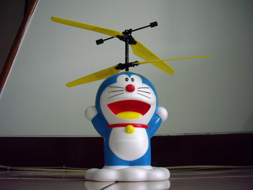
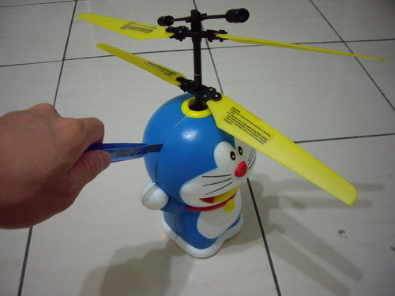
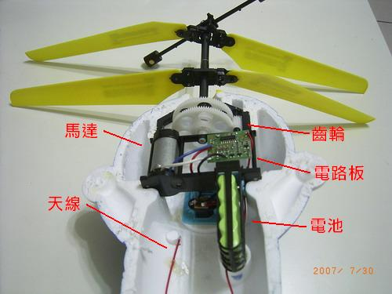
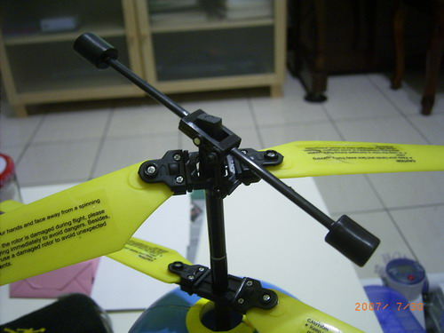

小叮噹的竹蜻蜓

小叮噹(哆啦A夢)是許多人童年美好的回憶，他總是能拿出許多道具幫助
大雄解決問題，其中最常出現的道具之一就是竹蜻蜓，戴在頭上，就能像
直昇機一樣飛到空中。
這隻小叮噹與遙控直升機結合，成了真的可以用竹蜻蜓飛起來的小叮噹，
但是，雙螺旋槳的設計就是和漫畫裡的不一樣，所以，我把其中一組拆
了下來，結果................
想一想，除了增加升力，遙控小叮噹為何要用兩組螺旋槳？
========== 後記 =========
上面拆掉一組螺旋槳的示範弄壞小叮噹了，上層螺旋槳因為碰撞而沒有
跟上馬達的轉動。所以就飛不起來了，既然都飛不起來了，不如我就把
他拆開來，看看能不能修好。
↑修理小叮噹的影片。

↑用美工刀小心的沿著黏接線切開，老師有練過，同學們不要輕易嘗試....

↑拆解後的樣子，正面，背面，還有小叮噹腳下踩的雲，都是保力龍製品。

↑內部結構，有天線、馬達、電池、齒輪、電路板，一目了然。

↑修好小叮噹之後，發現上層螺旋槳有一個啞鈴形的東西，他會跟著
螺旋槳轉動，但沒辦法提供上升力量。同學們想一想，這東西是用來幹麻的呢？